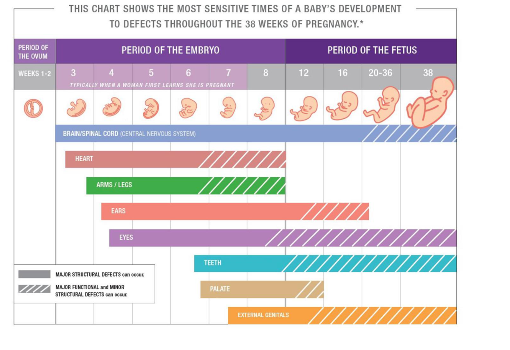
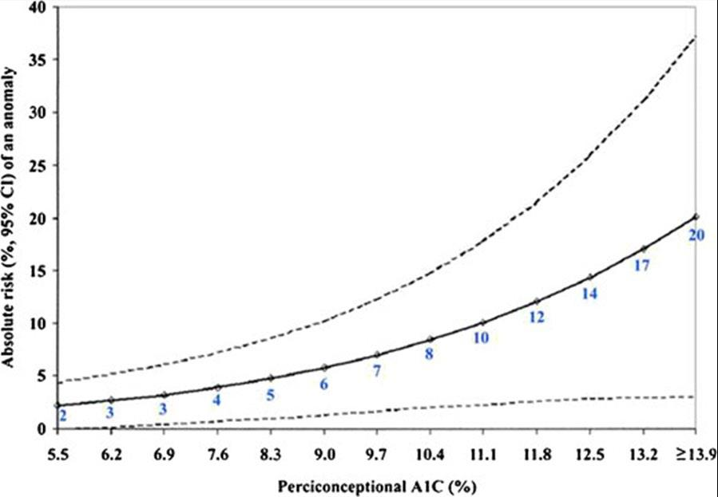
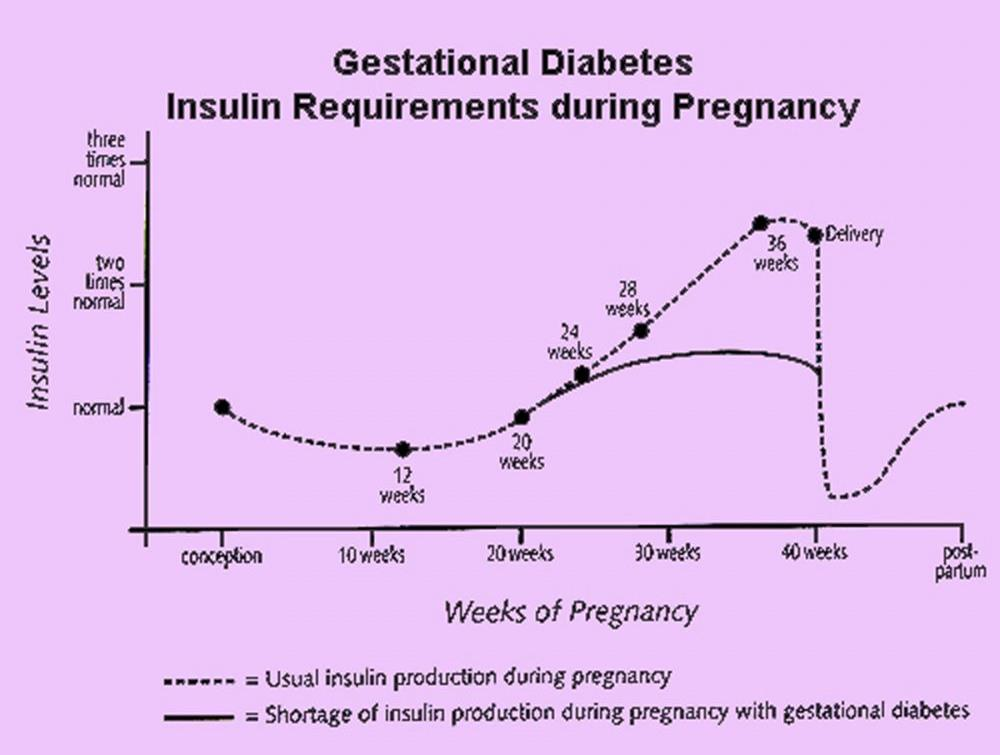

Diabetes & Pregnancy
- Organogenesis is done by ~8 weeks — often before a woman knows she's pregnant, which is why preconception (not just prenatal) glucose control matters most.
- Pre-pregnancy DM raises malformation risk; GDM does not (hyperglycemia starts after organogenesis).
- Insulin needs fall in the 1st trimester (hypo risk), rise steadily through the 2nd/3rd, then drop sharply postpartum.
- GDM screening: 50g screen < 7.8 normal, ≥ 11.1 diagnostic, 7.8–11.0 needs a 75g OGTT.
Learning Objectives
- Summarize the implications of pre-pregnancy DM (types 1 and 2) vs. gestational diabetes (GDM) for mother and baby.
- List the Diabetes Canada criteria for diagnosing GDM and for optimal BG control in GDM and pre-pregnancy DM.
- Compare the risks of GDM with the risks of pre-pregnancy DM.
Pre-Pregnancy DM: Malformation Risk
High blood glucose can affect organogenesis, which is essentially complete by ~8 weeks — often before a woman knows she's pregnant. That's the whole case for preconception control, not just control once pregnant.

Malformation risk spans neural tube defects (anencephaly, spina bifida), cardiac defects (transposition of the great vessels, coarctation, ASD, pulmonary stenosis), and GI/GU/skeletal anomalies (duodenal atresia, renal agenesis, caudal regression syndrome). Congenital malformation risk overall is 1.7–9.4% (vs. 2–4% baseline).

Target preconception A1c is ≤ 7.0% (some push for < 6.5%) — optimal control is associated with a 70% reduction in congenital anomalies.
Pre-Pregnancy DM: Through the Pregnancy
| Stage | Insulin Needs |
|---|---|
| 1st trimester | May fall — higher hypoglycemia risk |
| 2nd trimester | Rise slowly (rising placental hormones → insulin resistance) |
| 3rd trimester | Rise a great deal more, regardless of intake |
| Postpartum | Drop remarkably — breastfeeding can lower BG further |
- Pre-eclampsia: double the risk vs. non-diabetic pregnancy (10% vs. 5%); can progress to eclampsia.
- Retinopathy can worsen with poor control; usually settles postpartum. Screen before, during, and within a year after pregnancy.
- Nephropathy: ARBs and ACE inhibitors are contraindicated in pregnancy; usually settles postpartum.
- Infants are more prone to macrosomia and postpartum hypoglycemia — but are not at risk of being born with diabetes themselves.
Gestational Diabetes (GDM)
GDM is a transient DM diagnosed at 24–28 weeks, driven by the insulin resistance of weight gain and placental hormones. It resolves after delivery but marks increased risk for "true" diabetes later — up to 60% of women, depending on follow-up length and other factors.
Because the hyperglycemia sets in well after organogenesis, GDM carries no increased malformation risk. The risks instead come from a sustained high glucose load: macrosomia (> 4 kg, risking birth trauma and asphyxia), higher C-section rate, stillbirth, and postpartum hypoglycemia/hypocalcemia/hyperbilirubinemia.

Screening, Treatment & BG Goals
- Treatment: low simple-carb diet in 3 meals + 3 snacks, post-meal walks, home BG monitoring. If BG stays high: insulin or metformin first-line; glyburide crosses the placenta (neonatal hypoglycemia risk) and is more of a fallback.
- BG goals — same across GDM, T1DM, and T2DM: fasting < 5.3 mmol/L, 1hr post-meal < 7.8 mmol/L (T1/T2 also target A1c < 6.5%, balanced against hypoglycemia risk).
- All GDM treatment stops after delivery, but a 75g OGTT at 6 weeks–6 months postpartum rules out ongoing diabetes.
GDM vs. Pre-Pregnancy DM, Side by Side
| GDM | Pre-Pregnancy T1/T2 DM | |
|---|---|---|
| Congenital malformation risk | No | Yes, depending on A1c at conception |
| Preconceptual folic acid | No | Yes |
| A1c monitoring | Don't check | Preconception, then monthly |
| Insulin needs during / after pregnancy | Rise / fall, meds can stop | Rise (can be very high by term) / fall, doses lowered |
| Maternal HTN & obstetric intervention risk | Increased | Increased |
| Infant risk of DM at birth | No | No |
| Infant risk of low BG at birth | Yes | Yes |
Case: Catching It Early
35-Year-Old, First Pregnancy via Fertility Treatment
PCOS; mother has T2DM. 25 weeks; weight 100 kg, BP 135/95. 50g screen 8.5 mmol/L → 75g OGTT: fasting 6.5 / 1hr 10.9 / 2hr 10.6 mmol/L, all elevated — GDM diagnosed.
Diet and post-meal walking controlled lunch/supper, but fasting and post-breakfast stayed high → started on aspart 4 units pre-breakfast + detemir 6 units at bedtime. By 37 weeks, doses had climbed to aspart 40/10/10 units and detemir 60 units — tracking the expected third-trimester rise. Baby estimated at the 97th percentile → induced at 38 weeks.
Delivered vaginally at 4.5 kg; 2 days in NICU for low BG and jaundice, then breastfed well. At 6 months postpartum: 40 lb lost, active, and a normal 75g OGTT — diabetes avoided.
Key Takeaway
Watch for the woman diagnosed with "GDM" who actually has undiagnosed type 2 (or early type 1) DM. Diagnosis still happens at 24–28 weeks either way — but if it's really pre-existing diabetes, the BGs won't normalize after delivery, and medication needs during pregnancy tend to run unusually high for "just GDM."
Adapted (not reproduced verbatim) from Dr. Aisha Yusuf Ibrahim, MD FRCPC (Endocrinology and Metabolism, St. Joseph's Health, London), "Pregnancy and Diabetes," with contribution from Dr. Ruth McManus, MD FRCPC.